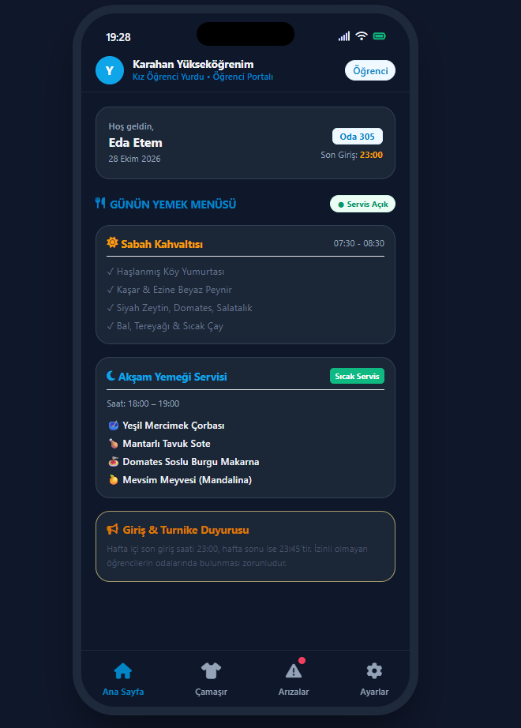
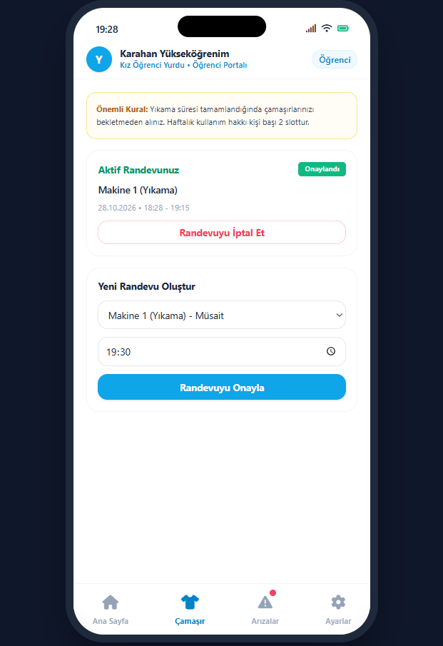
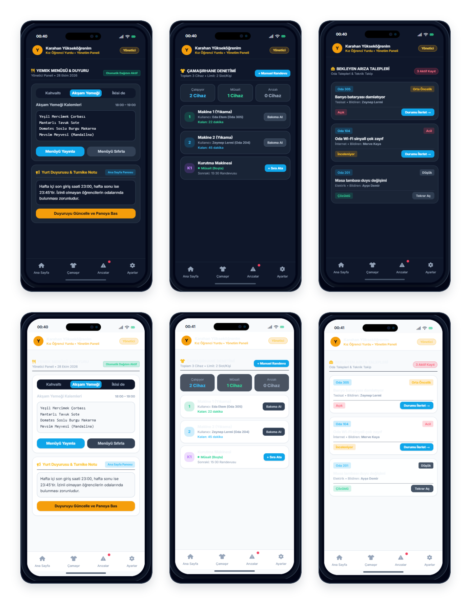

Prototyping Document - Yurtify Application
Prototyping Summary
This study presents the prototype evaluation results for Yurtify, an application designed to simplify daily management and improve resident communication in private student dormitories. Building upon the issues identified during our initial user interviews, we developed a mobile-first, interactive prototype. We tested this prototype with 6 students residing in private dormitories and 1 dormitory administrator.
During the evaluation sessions, all core features of the application were examined: secure resident sign-in using administrator-enrolled accounts, high-contrast Light and Dark mode options for day and night use, daily meal schedules, the administrative announcements board, a fair-use laundry reservation system with quota limits, and the maintenance request flow. All user feedback, encountered challenges, and our planned improvements are detailed below.
Prototype Visual Architecture
Below are the structured interface captures showing dual-theme capabilities across all primary functional modules. Sized for clear, legible text inspection.









1. User Authentication and Resident Sign-In
Evaluation Questions:- Do students experience any friction when signing in with their administrator-enrolled accounts?
- Are the sign-in form fields (Username and Password) sufficient and clear for quick daily access?
- Is assistance and password recovery guidance clear for residents encountering sign-in issues?
- Administrative Enrollment: Having dormitory administrators register resident accounts directly eliminates account setup hassle for students and prevents duplicate or unauthorized profiles.
- Streamlined Access: Accessing the portal with just the Username and Password kept the initial flow clean, direct, and straightforward.
- Improvement Recommendation: Adding a "Remember Me" option and biometric authentication (Fingerprint / Face ID) to save students from repeatedly re-entering credentials on every session.
2. General Interface, Readability, and Dual-Theme Architecture
Evaluation Questions:- Does the overall layout, touch targets, and persistent bottom navigation provide a comfortable mobile experience?
- Are the font sizes and typography legible and comfortable across all primary screens?
- Do the Light and Dark theme options deliver comfortable reading contrast in both daytime and night dorm environments?
- Effortless Navigation: The modular card hierarchy and bottom navigation bar allowed residents to access any operational service within 1–2 taps.
- Text Size Feedback: Participants noted in usability sessions that certain label and descriptive font sizes felt too small on standard mobile screens, recommending enlarged typography or an adjustable text size setting.
- Theme Flexibility: Dark Mode was decisively favored for late-night mobile usage in shared rooms to reduce glare, while Light Mode provided optimal daytime clarity. Users also suggested adding an automatic "Match System Theme" setting.
3. Daily Dining Schedules and Administrative Announcements
Evaluation Questions:- How clearly do the breakfast and dinner cards convey menu items alongside official service hours (07:30–08:30 and 18:00–19:00)?
- Is the integrated Announcements Board effective for residents to stay updated with official dormitory policies and news?
- Are active dining status tags (e.g., "Active Hot Service", "Service Open") intuitive and easy to interpret?
- Clear Dining Cards: Time-stamped daily menus eliminated mealtime ambiguity and redundant verbal inquiries to dining staff.
- Centralized Announcements: Publishing curfew hours, boiler heating schedules, and facility rules directly on the home screen successfully replaced cluttered WhatsApp groups and paper notices.
- Improvement Recommendation: Participants requested high-priority push notification alerts sent directly to resident phones whenever unexpected menu changes or urgent facility notices (such as water or power outages) are published.
4. Laundry Facility Reservation and Quota Tracking
Evaluation Questions:- Is the reservation workflow (choosing Washer/Dryer, date, and 1.5-hour operating slots) straightforward and transparent?
- Are personal bookings and weekly fair-use allocations (2 slots per resident) clearly visible on the screen?
- Are reservation booking and cancellation actions intuitive enough to prevent scheduling conflicts?
- Fair Quota Allocation: Clear segregation of washing and drying units alongside the visible 2-slot weekly limit was strongly approved to prevent slot monopolization.
- Facility Overview Need: Residents highlighted that they would like a quick top-level capacity summary ("How many machines are currently idle vs. running?") before initiating a slot reservation.
- Improvement Recommendation: Implementing a timely push reminder dispatched 10 minutes prior to reservation start, followed by an immediate notification dispatched the exact moment the cycle finishes to prompt swift garment retrieval.
5. Maintenance Request and Work-Order Tracking
Evaluation Questions:- Does the category list (Plumbing, Electrical, Wi-Fi, Furniture, Structural) adequately cover routine dormitory maintenance issues?
- How effective are the visual status badges ("Open", "Under Review", "Resolved") in tracking the progress of submitted requests?
- Does the administrative overview streamline reviewing and updating work-order states for facilities staff?
- Fast Reporting: Submitting maintenance requests via structured dropdown categories proved significantly faster than paper or front-desk verbal reporting.
- Status Transparency: Color-coded badges provided reassuring visibility, confirming that requests were received and dispatched to technicians.
- Improvement Recommendation: To ensure streamlined operations, final ticket verification and closure will be handled directly and solely by authorized administrators following technical completion, without requiring resident counter-confirmation.
Suggested Architectural and Interface Improvements
1. Sign-In Experience and General Usability:
- a. Add a "Remember Me" option and biometric authentication (Fingerprint / Face ID) on the sign-in screen for rapid access.
- b. Enlarge baseline typography and labels across all primary cards to resolve readability concerns noted in user audio feedback.
- c. Implement an automatic "Match System Theme" setting in addition to the manual Light and Dark mode selectors.
2. Dining Management and Announcements:
- a. Deploy high-priority push notification alerts for unexpected menu changes and critical facility notices (e.g., unplanned power or water maintenance).
3. Laundry Operations and Notifications:
- a. Display real-time facility occupancy summaries (idle vs. active machine counts) on the resident laundry dashboard.
- b. Trigger an automated reminder notification dispatched 10 minutes prior to reservation start time.
- c. Trigger an automated completion alert the moment the washing/drying cycle finishes to ensure prompt machine unloading.
4. Maintenance and Facility Administration:
- a. Keep maintenance request resolution and closing authority centralized under verified dormitory administrators for efficient and secure maintenance tracking.
Appendix: Prototyping Audio Recordings and Evaluation Records
The digital audio recordings, evaluation logs, and usability test session transcripts conducted with university students residing in private dormitories and the dormitory administrator for the Yurtify Application are archived and accessible via the secure institutional repository link below: